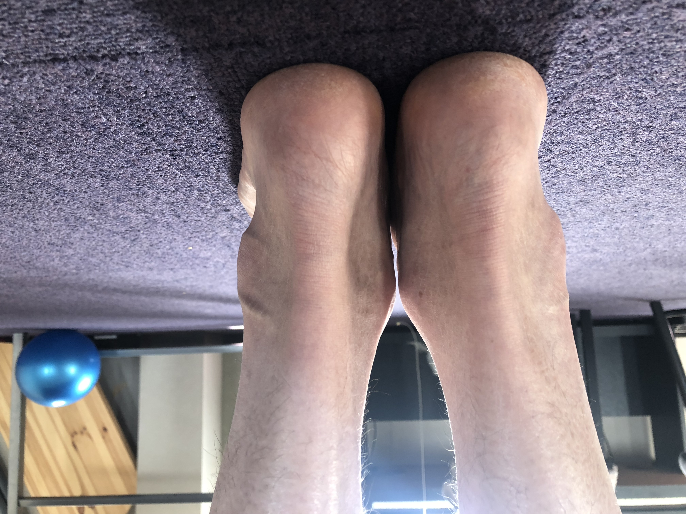
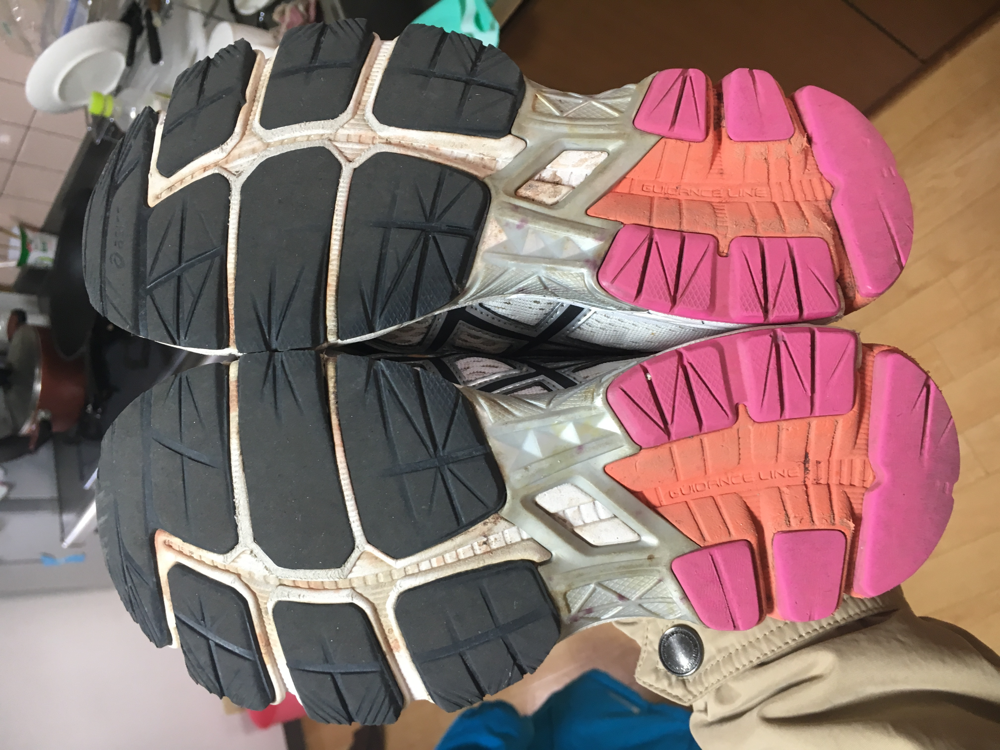
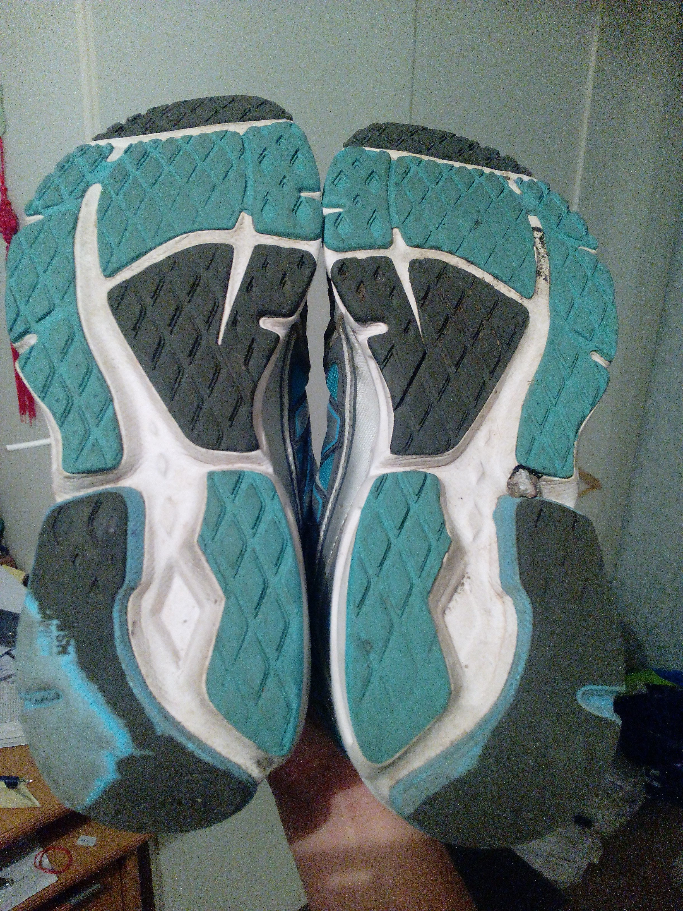
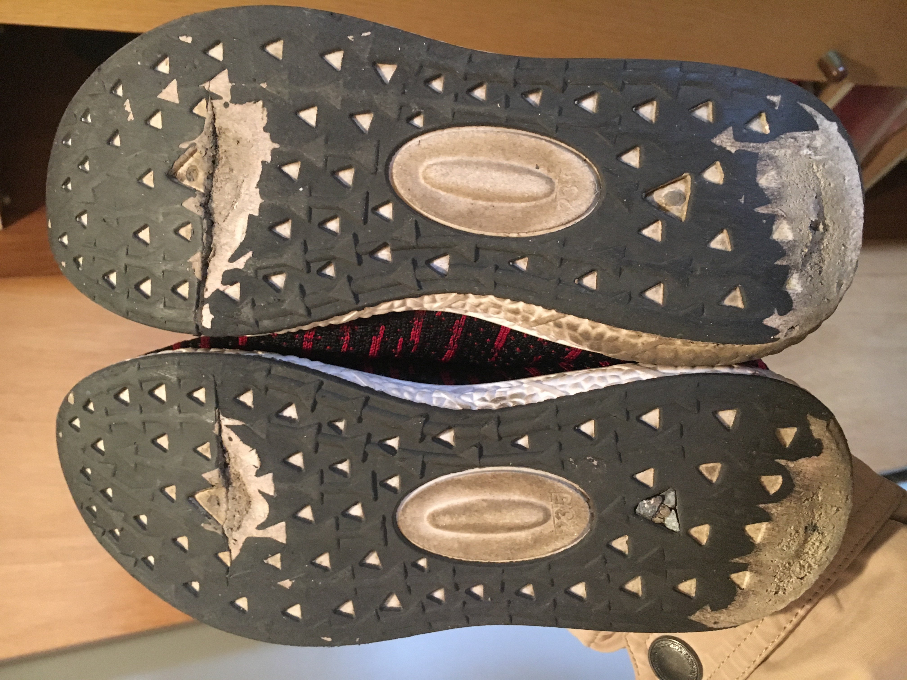
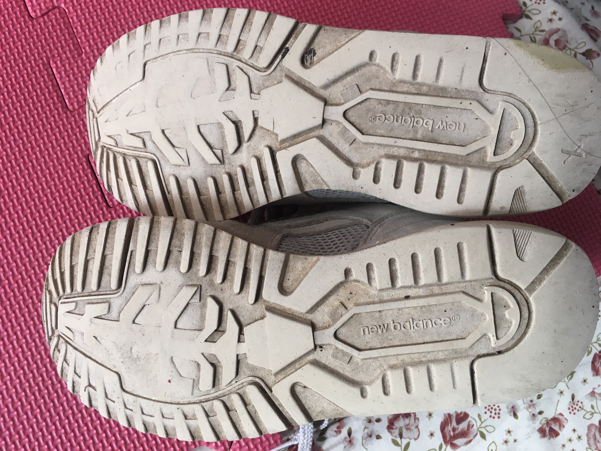
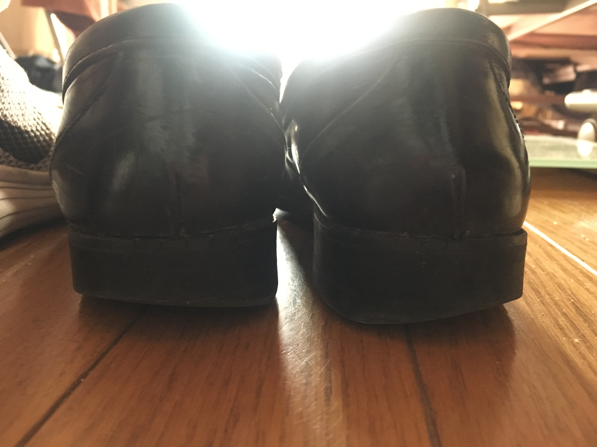
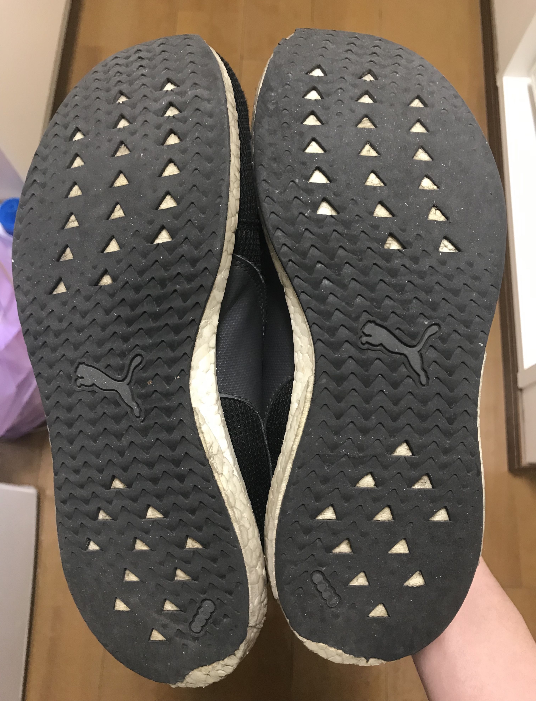
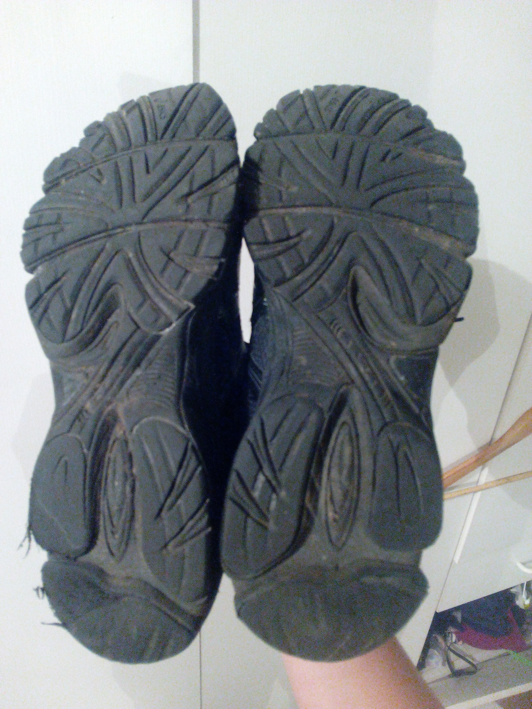
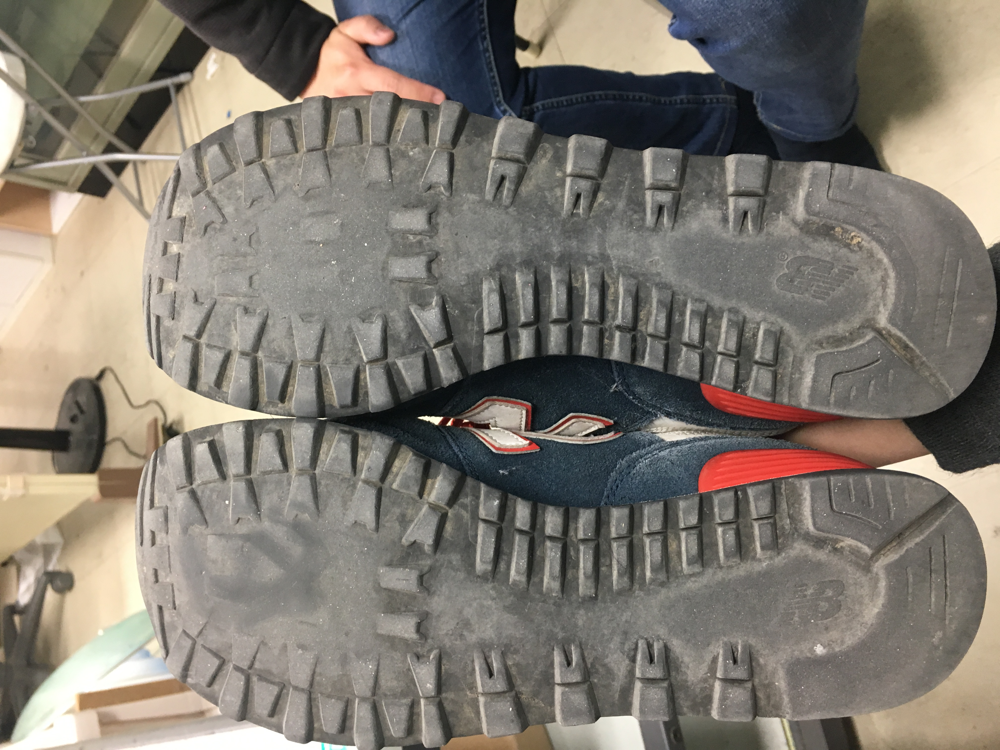

上一章
话说我2014年为了马拉松冲4小时，看了10本跑步书，内容包括运动伤害，跑姿分析等。很多人跑步跑到膝盖痛，以为自己姿势不正确，其实好些人（达到几分一）有脚型问题。如果你是一员，就需要先配鞋垫解决这个问题然后才能跑步的。我凭着我的知识帮助几位朋友检查过。今章就把我录的的“数据”教大家分析。
我在街上试过观察人走路，好几次看到有些人脚底落地不对，真的很想上前问你有没有膝盖痛。
现在我们来看些照片。

我的脚后跟，还算正，但好像粗细不一。

我的鞋底，不对称性其实挺明显的。右脚磨的厉害，所以我冲四时跑的多试过运动伤害在右脚。这个落地不对称性和我肌肉力量不对称应该有关。因为平时我做一个肌肉训练动作时，左腿总是很轻松但右腿就很费劲。话说我冬天外面跑步，左手很正常，跑一会就热，但右手跑很久还是凉的。另外，我落地右脚比左脚往外侧，蹬地偏中间。落地蹬地都是在中间好，这样才能发挥最大力量。

这也是我的，分析和上面一样。

这是我曾经只用来走路的鞋。怎么右脚后内侧先落地，左脚后外侧先落地。

这是视频第一个人的鞋。从脚跟部分看到左右非常不对称。右脚外侧落地明显，然后蹬地也偏外侧，没用脚掌中间部分力量，蹬地力量就减少，这个人跑步会比较吃力。

上面的人另一双鞋。明显右脚外侧磨损严重，和上面运动鞋一致。

这个人后跟偏内侧落地。左脚蹬地明显外侧，右脚偏外侧，跑步也会有点吃力。

这个人是长短腿，右面短。

看他的鞋，短一点的右脚磨的更厉害。

左右不对称性严重，右侧磨的厉害多。要出问题也是右面先出。

下一章